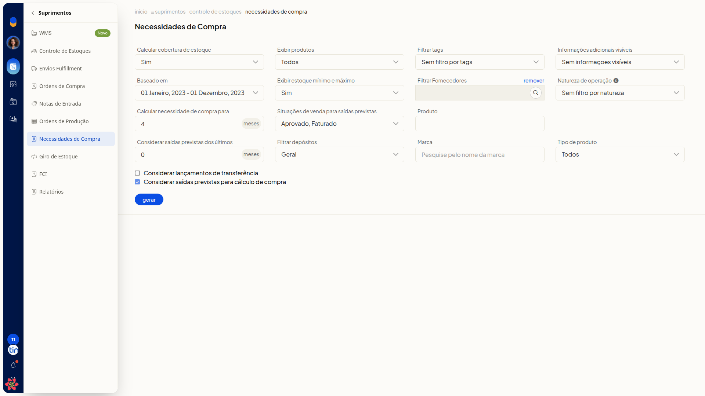
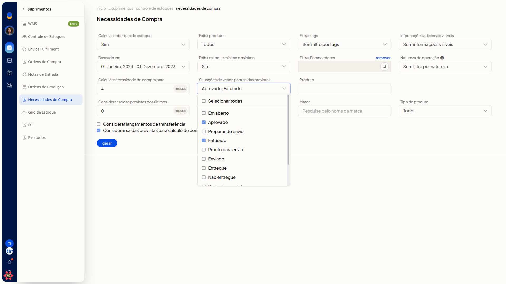
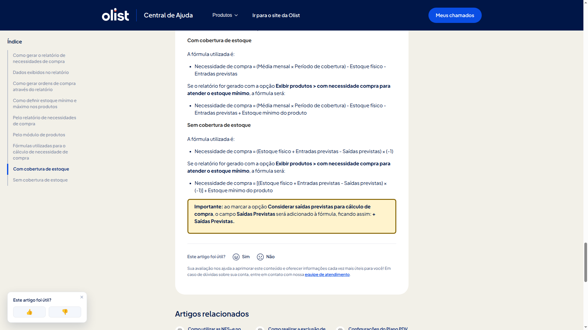
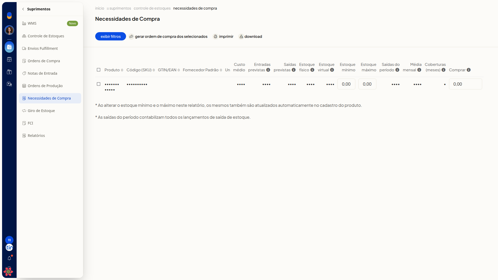
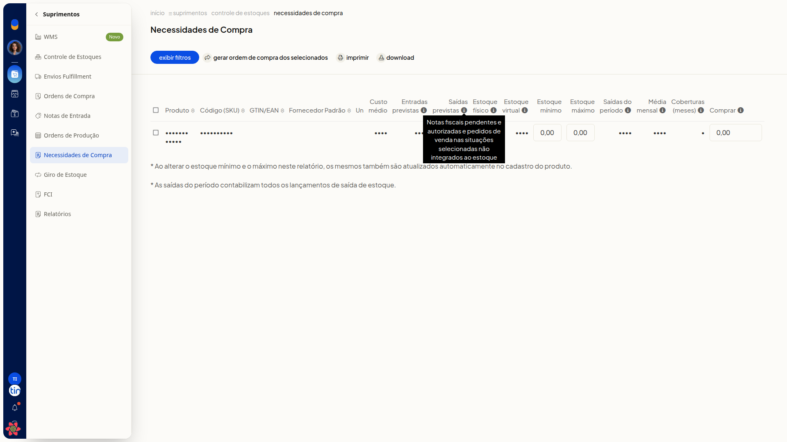
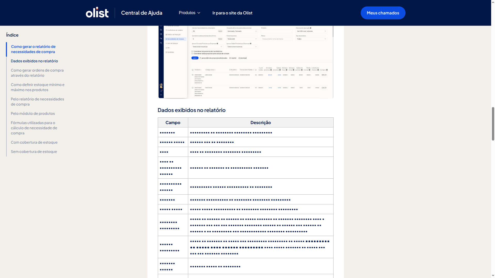

Entender as saídas previstas no relatório de necessidade de compra
No relatório de Necessidades de Compra do ERP da Olist, a coluna Saídas previstas mostra, por produto, as saídas que ainda não entraram no estoque. Você pode usar esse valor para decidir a compra.
A coluna reúne os pedidos de venda das situações marcadas no filtro e as notas fiscais pendentes e autorizadas ainda não integradas ao estoque. Você escolhe essas situações, limita a quantidade de meses e pode incluir as saídas previstas no cálculo de compra. O relatório fica em Suprimentos > Necessidades de Compra.
Importante
- Não há filtro separado de situação da nota nesta tela.
- Notas fiscais com estoque estornado não entram nas saídas previstas.
- Alterar o estoque mínimo ou o estoque máximo neste relatório também atualiza o cadastro do produto. Consultar a coluna Saídas previstas não exige editar esses campos.
Instruções
-
No menu lateral, acesse Suprimentos > Necessidades de Compra.
-
Confira o filtro Situações de venda para saídas previstas. O filtro não é obrigatório e exibe as situações marcadas.

-
Abra a lista e marque as situações de venda que devem entrar como pedidos. Só as situações marcadas entram na coluna. Deixe Cancelado desmarcado se não quiser considerar pedidos cancelados. Marque Cancelado se quiser incluí-los.
A lista traz:
- Selecionar todas
- Em aberto
- Aprovado
- Preparando envio
- Faturado
- Pronto para envio
- Enviado
- Entregue
- Não entregue
- Dados incompletos
- Em devolução
- Cancelado

-
Para limitar o período, digite a quantidade de meses em Considerar saídas previstas dos últimos. O campo não é obrigatório.
-
Mantenha ou desmarque Considerar saídas previstas para cálculo de compra. A opção não é obrigatória. Com a opção marcada, o ERP inclui a saída prevista no cálculo de compra, para considerar pedidos que ainda não tiveram saída efetiva do estoque.

-
Clique em Gerar.
-
Leia a coluna Saídas previstas. A coluna mostra um valor numérico por produto, com as saídas ainda não integradas ao estoque. Você pode usar esse valor no cálculo de compra.

-
Veja o ícone de informação ao lado de Saídas previstas. O texto informa: Notas fiscais pendentes e autorizadas e pedidos de venda nas situações selecionadas não integrados ao estoque.


-
Para reabrir os filtros, clique em Exibir filtros.
-
Para levar o relatório já gerado para fora da tela, clique em Imprimir ou em Download.
Resultado
Depois de gerar, a tabela mostra Saídas previstas com um valor numérico por produto, ao lado de Entradas previstas, Estoque físico e Estoque virtual. O valor reúne os pedidos nas situações de venda escolhidas e as notas fiscais pendentes e autorizadas ainda não integradas ao estoque.
Informações adicionais
Saídas do período contabilizam os lançamentos de saída de estoque
A coluna Saídas do período é outra coluna do relatório e contabiliza todos os lançamentos de saída de estoque.